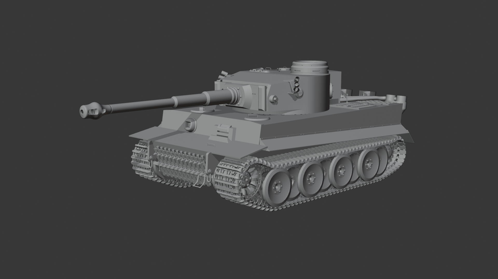
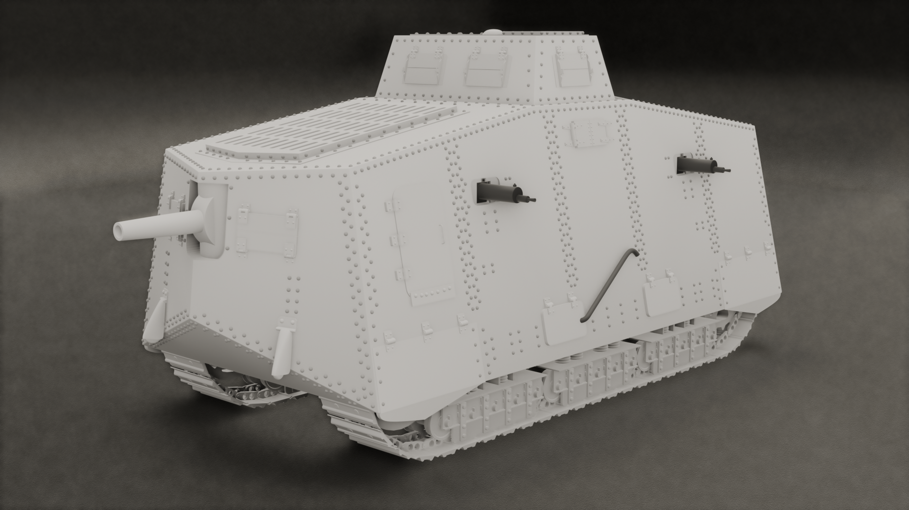
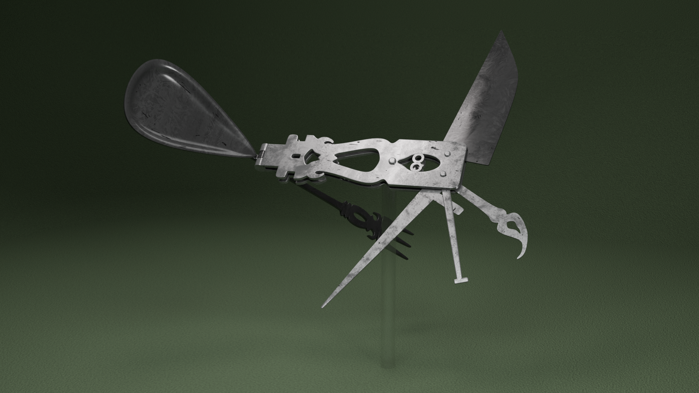
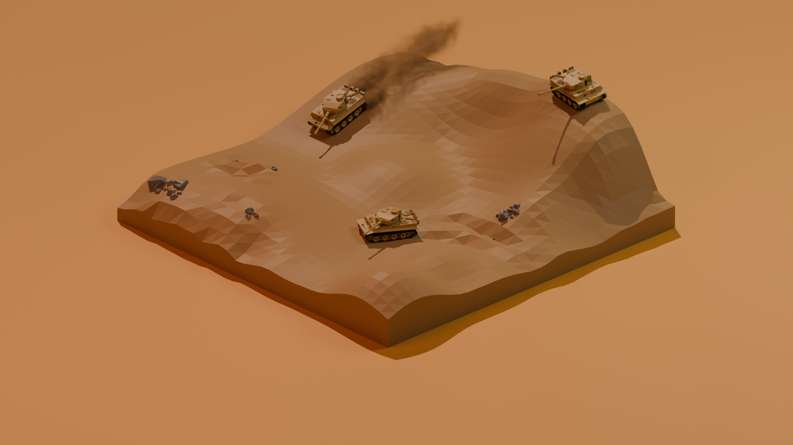

I'm a 3D modeler, designer, painter, and writer who's passionate about history and using digital art as a medium for modern storytelling. My program of choice is Blender - with over 1,500 hours spent working within and teaching it - though I am also proficient in the architectural design software Rhinoceros, the game engines Unity and Unreal 4, as well as Photoshop and the 2D pixel art software Aseprite. You can view some of my hand-picked work below; I am very proud of everything that you'll see.



